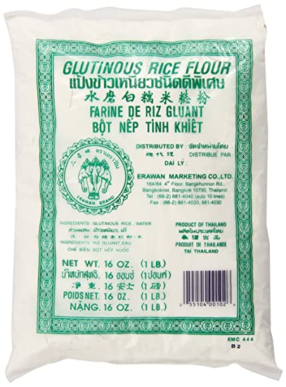

Cambodia has one of the tastiest and cheapest snacks you can find on
the streets. Domlong Jean, deep-fried sweet potatoes are a very
popular option. It has a crispy texture that suited the mild, sweet,
and starchy taste of the sweet potatoes
Ingredients.
2/3cup or 110g of rice Flour
Sweet potatoes
1 1/4cup or 300ml water
6 1/2tbsp or 65g all-purpose flour
2tbsp or 15g to 18g of glutinous rice flour
5tbsp or 45g of corn starch
1/2tsp of salt
1/4tsp or 1g or 2g of baking powder
3tbsp or 40g of sugar

glutinous rice flour
Instructions.
First, add 110g of rice flour, 65g of all-purpose flours, 45g of
corn starch, 15g of glutinous rice flour, 40g of sugars, 1/2 tsp of
salt, and 2g of baking powder into a bowl and mix it for a bit.
Afterwards, add water to the mixture little by little and mix it
well.
Now, cover that flour mixture using a cling wrap and let it sit for
30 minutes.
Then, slice the potatoes into flat rectangular shapes at your
preferable size.
After the 30 minutes is over, add any cooking oil into the pan using
medium heat.
Coat the potatoes with the flour mixture and add them one by one in
the pan when the oil is a bit heated. Turn it around several times
to make sure it's completely cooked.
Now, the crispy deep-fried sweet potatoes are ready to enjoy!
{kind=link}